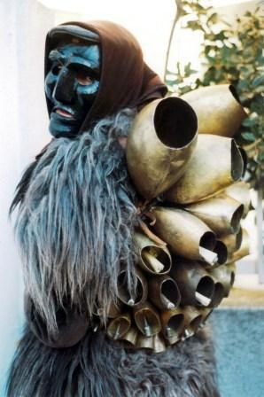

Breve storia dei Mamuthones
I Mamuthones sono, assieme agli Issohadores, maschere tipiche del carnevale di Mamoiada in Sardegna. Le due figure si distinguono per i vestiti e per il modo di muoversi all'interno della processione: i Mamuthones procedono affaticati e in silenzio mentre gli Issohadores vestono in modo colorato e danno movimento alla processione.
Nella figura, un Mamuthone di Mamoiada
Le maschere
La maschera facciale del mamuthone (visera) è nera e di legno, bianca quella dell'issohadore. Viene assicurata al viso mediante cinghiette in cuoio e contornata da un fazzoletto di foggia femminile. Il corpo del mamuthone viene coperto da pelli di pecora nera (mastruca), mentre sulla schiena è sistemata una serie di campanacci (carriga). L'Issohadore, invece, indossa un copricapo detto berritta, maschera bianca, un corpetto rosso (curittu), camicia e pantaloni bianchi, una bandoliera di campanellini in bronzo (sonajolos), lo scialletto, le ghette in orbace (cartzas) scarponi in pelle e infine la fune (soha).
Le maschere vengono prodotte con vari tipi di legno successivamente annerito. Oltre al fico viene impiegato l'ontano e l'olmo; qualcuna è in castagno o in noce, mentre anticamente le si produceva in pero selvatico.
Il carnevale di Mamoiada
Il Carnevale di Mamoiada è uno degli eventi più celebri del folclore sardo.
La sfilata dura dal pomeriggio fino alla tarda sera; per tutto il giorno i figuranti si limitano nel mangiare e nel bere poiché l'esibizione richiede sforzo e le cinghie dei campanacci comprimono il torace limitandone l'estensione e, di conseguenza, la respirazione. Il comportamento dei Mamuthones e degli Issohadores non ricorda un'allegra carnevalata quanto una solenne processione composta e ordinata, una cerimonia che ricorda un corteo religioso. Il passo cadenzato per avanzare e scuotere i campanacci ricorda una danza, «una processione danzata» come l'ha definita l'etnologo Raffaello Marchi che per primo, negli anni ‘40, ha osservato da vicino questa manifestazione.
La storia
L'origine dei mamuthones resta ancora oggi controversa. Secondo uno studio di Marcello Madau, archeologo dell'accademia di Belle arti di Sassari, mancano fonti scritte che testimonino la presenza dei Mamuthones in tempi lontani (seppur considerando che la trasmissione di usi e costumi in Sardegna è prettamente orale). Il Wagner non ne parla. Secondo lo stesso studio, comunque, testimonianze orali attestano che i Mamuthones sfilavano già nel XIX secolo. Alcuni sostengono invece che il rito risalga all'età nuragica, come gesto di venerazione per gli animali, per proteggersi dagli spiriti del male o per propiziare il raccolto. Fra le ipotesi avanzate sull'origine della rappresentazione vi sono anche una celebrazione della vittoria dei pastori di Barbagia sugli invasori saraceni fatti prigionieri e condotti in corteo, oppure un rito totemico di assoggettamento del bue, o anche una processione rituale fatta dai nuragici in onore di qualche nume agricolo e pastorale. Alcuni studiosi sostengono un legame con riti dionisiaci, altri negano questo collegamento, e la includono invece fra i riti che segnano il passaggio delle stagioni.
Il modello 3D
La maschera rappresentata nel modello 3D non è una maschera tradizionale. Infatti, le maschere dei Mamuthones erano o nere o bianche.
Infatti, questa maschera è una rappresentaione artistica fatta da un artista sardo, Calaresu Paolo, a Desulo.
Presenta delle caratteristiche particolari che la differenziano da una maschera Mamuthones tradizionale:
- Colore: la maschera tradizionale Mamuthones era ed è nera o bianca. In questo caso l'artista ha voluto lasciare il colore naturale del legno, per far apprezzare meglio le caratteristiche tipiche dell'intaglio a mano;
- Forma: la forma è stilizzata rispetto a quella tradizionale. Infatti, questa maschera risulta essere molto più lunga di una sua controparte classica.
- Utilizzo: l'utilizzo di una maschera Mamuthones tradizionale è chiaro; veniva infatti creata per essere indossata durante il carnevale (epoca contemporanea) e durante i riti compiuti in età nurargica (la civiltà nuragica, nata e sviluppatasi in Sardegna, abbracciò un periodo di tempo che va dalla piena età del bronzo (1800 a.C.) al II secolo d.C) per propiziare i raccolti. Questa maschera invece, non è stata creata per essere indossata, ma è stata realizzata come oggetto d'arte e d'arredamento. Basti notare che non ha dei buchi per i lacci di stoffa tipici, usati per reggere la maschera sul volto. Ha bensì due fori sulla parte superiore della maschera per essere appesa come arredamento.
Realizzazione del modello 3D
Questo modello 3D è stato realizzato attraverso la fotogrammetria da immagini.
In geomatica, la fotogrammetria è una tecnica di rilievo che permette di acquisire dei dati metrici di un oggetto (forma e posizione) tramite l'acquisizione e l'analisi di una coppia di fotogrammi stereometrici.
Nella pratica, quello che bisogna fare è acquisire un numero sufficiente di immagini da diverse posizioni, in modo da avere una visione d'insieme dell'oggetto più completa possibile. Il dataset per questo modello è costituito da 90 foto.
Di seguito alcune immagini usate per la creazione del modello.